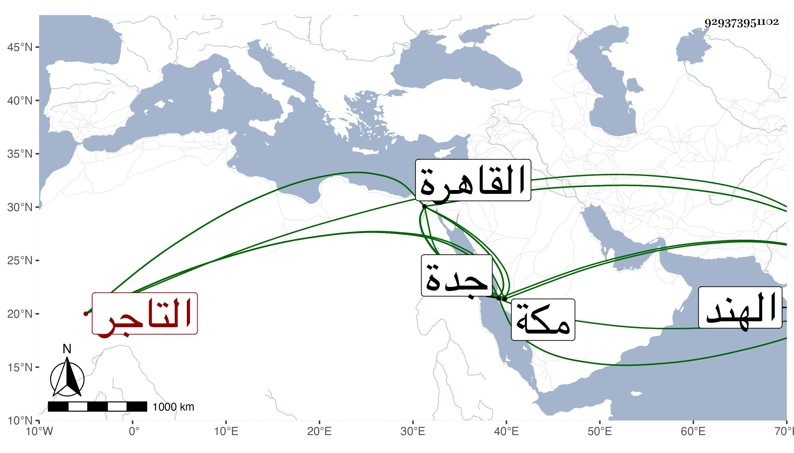

0902Sakhawi.DawLamic.ITO20230111-ara1.EIS1600.929373951102
Biography ID: 929373951102
286
محمد بن محمد بن عبد الغني التاجر أبو الفتح بن الشمس بن كرسون . أصيب في سنة سبع وتسعين وهو قادم من القاهرة إلى جدة برا وبحرا بموت جمع من بنيه وعياله ثم وهو متوجه من جدة إلى الهند بغرق ماله وعياله وسلم هو وولد له صغير ، وعاد بعد إلى القاهرة ثم قدم منها في أثناء التي تليها وسافر من جدة إلى بربرة في أواخرها ومعه البدر الجناجي ثم عاد في ربيع الثاني من التي تليها فباع ما كان معه من الحب بأربعين الطنم فما دون ذلك ثم وصل مكة في جمادى الأولى فمكث أياما ثم رجع في البحر إلى القاهرة أخلف الله عليه .
